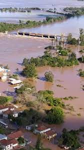

Jornal
CERB
Você sabe como está o Rio Grande do Sul? Veja abaixo:
A tragédia no Rio Grande do Sul com as enchentes e alagamentos atingiu 2.3 milhões de pessoas. A cada 10 gaúchos, 2 sofrem com o impacto das chuvas. Milhares tiveram suas casas, móveis, eletrodomésticos, livros e memórias destruídos. Morreram 157 pessoas e 88 ainda estão desaparecidas. As cidades atingidas chegaram a 463 (93% do total). Cerca de 180 mil pontos estão sem energia elétrica. Essa é a fotografia do desastre vivido pelo povo gaúcho com as fortes chuvas, que tiveram seus primeiros registros no final de maio, com alertas para os riscos da onda de calor no centro do país que canalizava a umidade para o sul. Uma tragédia dessa magnitude não é apenas um acidente natural, como alguns querem fazer crer, mas consequência de um modelo de desenvolvimento econômico, do processo político-institucional e da forma de exxploração dos recursos da natureza.
A razão estrutural é a fase neoliberal do modo de produção capitalista no mundo e no Brasil, que intensifica as mudanças climáticas. Os desdobramentos desse sistema são a destruição da natureza com o consumo acelerado de energia e o avanço do modelo do agronegócio, a especulação imobiliária nas grandes metrópoles, a flexibilização da legislação urbana e ambiental por governos e pelos parlamentos, em todas as esferas.
Outras matérias: